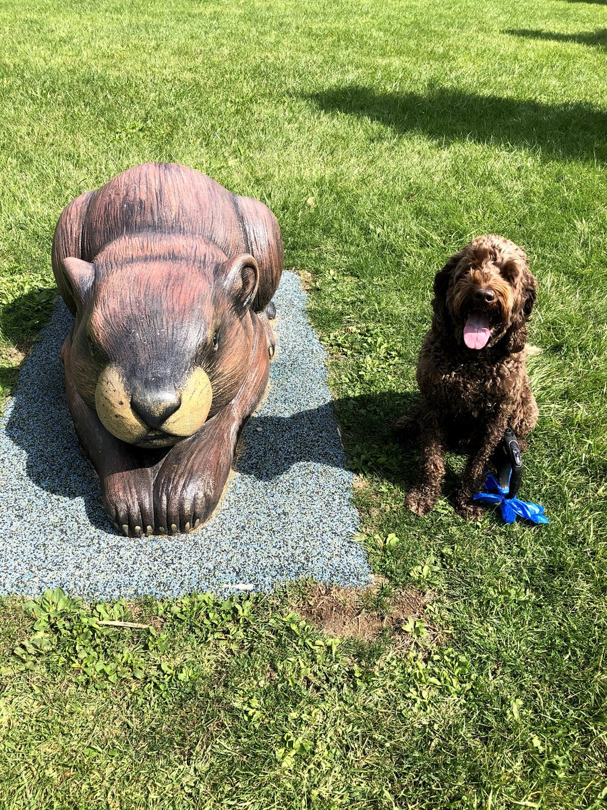
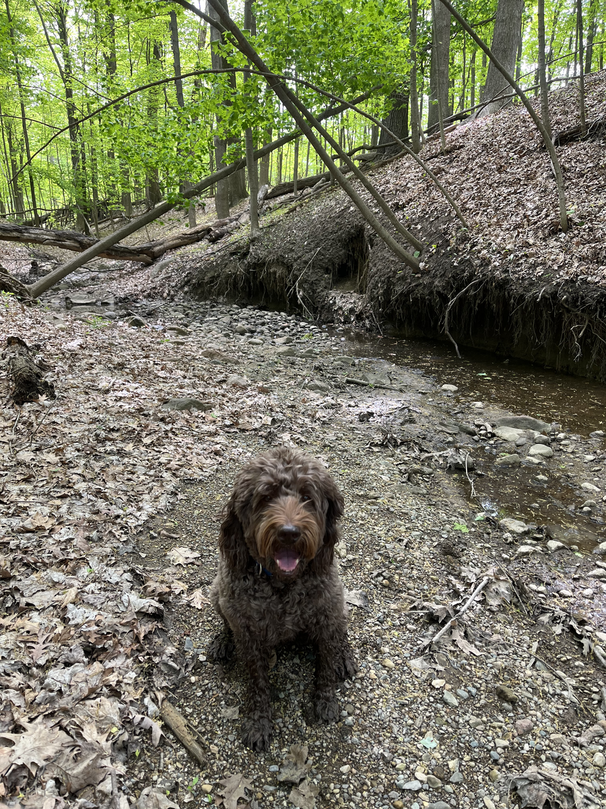
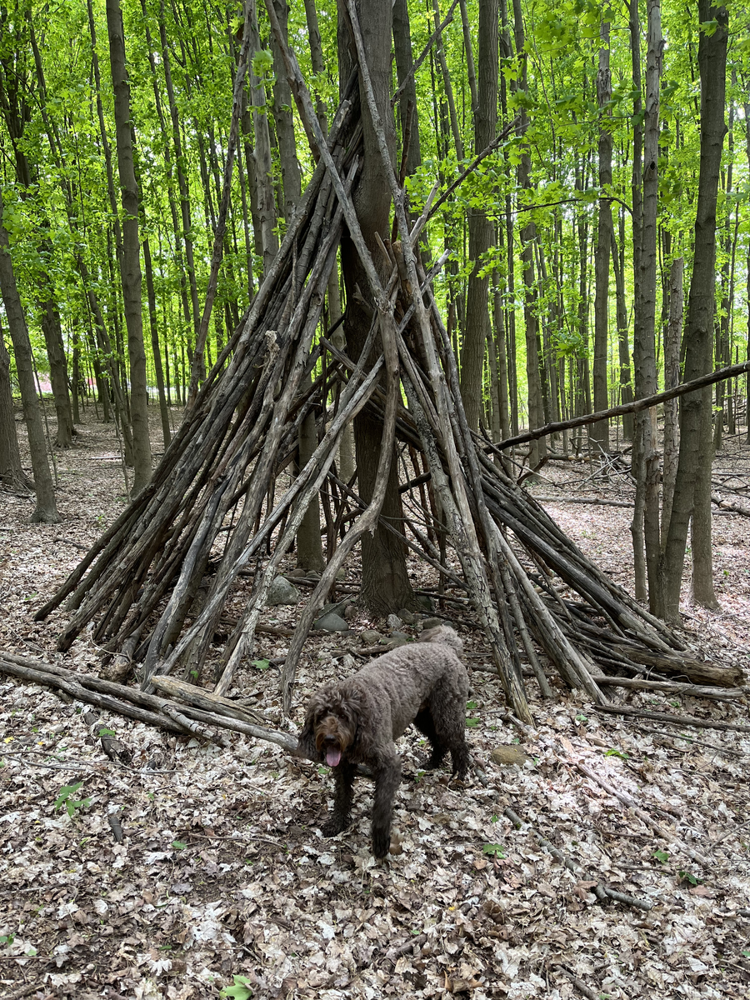

Hover over an image below to display here.



Interactivity with JavaScript
Move your mouse over a photograph to preview it. Move away to reset.
You can also use the Tab key to focus on each photograph.


